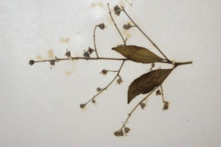
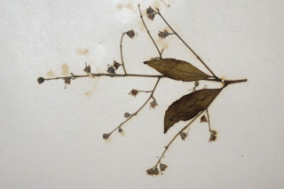

Large deciduous tree, up to 25 m tall.
25 ಮೀ.ವರೆಗೆ ಬೆಳೆಯುವ ಎಲೆಯುದುರು ಮಾದರಿಯ ದೊಡ್ಡ ಗಾತ್ರದ ಮರಗಳು.
25 മീറ്റര് വരെ ഉയരമുളള, ഇലപൊഴിക്കുന്ന വന്മരങ്ങള്.
மிகப்பெரிய இலையுதிர் மரம், 25 மீ. உயரம் வரை வளரக்கூடியது.
Bark smooth, white, peeling.
ತೊಗಟೆ ನಯವಾಗಿದ್ದು ಬಿಳಿ ಬಣ್ಣ ಹೊದಿದ್ದು ಸುಲಿಯುವ ಮಾದರಿಯಲ್ಲಿರುತ್ತದೆ.
അടര്ന്നിളകുന്ന, വെളുത്ത നിറത്തിലുളള മിനുസമായ പുറംതൊലി.
மரத்தின் பட்டை வழுவழுப்பானது, வெள்ளை நிறமானது, உரியக்கூடியது.
Branchlets terete, minutely puberulous.
ಕಿರುಕೊಂಬೆಗಳು ದುಂಡಾಗಿರುತ್ತವೆ ಮತ್ತು ಸೂಕ್ಷ್ಮವಾದ ಮೃದು ತುಪ್ಪಳದಿಂದ ಆವೃತವಾಗಿರುತ್ತವೆ.
സൂക്ഷമമായി ലഘുരോമിലമായ, ഉരുണ്ട ഉപശാഖകള്.
சிறிய நுனிக்கிளைகள் குறுக்குவெட்டுத் தோற்றத்தில் வளையமானது, மிக நுண்ணிய உரோமங்களுடையது.
Leaves simple opposite to subopposite, sometimes upper leaves alternate; petiole 0.5 cm, planoconvex in cross section, minutely puberulous; lamina 11 x 4.5 cm, elliptic, apex acute to acuminate, base acute, glabrous, white glaucous beneath; midrib slightly canaliculate; secondary_nerves 8-10 pairs; tertiary_nerves closely_horizontally_percurrent.
ಎಲೆಗಳು ಸರಳವಾಗಿದ್ದು,ಅಭಿಮುಖ ರೀತಿಯಿಂದ,ಉಪಅಭಿಮುಖ ರೀತಿಯವರೆಗಿನ ಮಾದರಿಯಲ್ಲಿರುತ್ತವೆ,ಕೆಲವು ವೇಳೆಮೇಲಿನ ಎಲೆಗಳು ಪರ್ಯಾಯ ಜೋಡನಾ ವ್ಯವಸ್ಥೆಯಲ್ಲಿರುತ್ತವೆ;ತೊಟ್ಟುಗಳು 0.5 ಸೆಂಮೀ. ಉದ್ದವಿದ್ದು ಅಡ್ಡ ಸೀಳಿದಾಗ ಸಪಾಟ ಪೀನ ಮಧ್ಯದ ಆಕಾರದಲ್ಲಿರುತ್ತವೆ ಮತ್ತು ಸೂಕ್ಷ್ಮವಾದ ಮೃದು ತುಪ್ಪಳದಿಂದ ಆವೃತವಾಗಿರುತ್ತವೆ. ಪತ್ರಗಳು 11 x 4.5 ಸೆಂ.ಮೀ ಗಾತ್ರ ಹೊಂದಿದ್ದು ಅಂಡವೃತ್ತ ಆಕಾರದಲ್ಲಿರುತ್ತವೆ. ಪತ್ರಗಳು ಚೂಪಾಗಿರುವುದರಿಂದ ಕ್ರಮೇಣ ಚೂಪಾಗುವ ತುದಿಯನ್ನು ಹೊಂದಿರುತ್ತವೆ ಮತ್ತು ಚೂಪಾದ ಬುಡ ಹೊಂದಿದ್ದು ರೋಮರಹಿತವಾಗಿರುತ್ತವೆ ಮತ್ತು ತಳಬಾಗದಲ್ಲಿ ಮಾಸಿದ ಬೂದು ಹಸಿರು ಬಣ್ಣಹೊಂದಿರುತ್ತವೆ; ಮಧ್ಯನಾಳ ಮೇಲ್ಭಾಗದಲ್ಲಿ ತುಸುವಾಗಿ ಕಾಲುವೆ ಗೆರೆಯನ್ನು ಹೊಂದಿರುತ್ತದೆ; ಎರಡನೇ ದರ್ಜೆಯ ನಾಳಗಳು 8 ರಿಂದ 10 ಜೋಡಿಗಳಿರುತ್ತವೆ;ಮೂರನೇ ದರ್ಜೆಯ ನಾಳಗಳು ಸನಿಹವಾಗಿದ್ದು ಲಂಬ ರೇಖೆಗೆ ಸಮಕೋನದಲ್ಲಿದ್ದು ಎಲೆದಿಂಡಿಗೆ ಅಡ್ಡವಾಗಿ ಕೂಡುವಂತವು.
ലഘുവായ ഇലകള്, സമ്മുഖം തൊട്ട് ഉപസമ്മുഖം വരെയും, ചിലപ്പോള് മുകളിലുളള ഇലകള് ഏകാന്തരമായും അടുക്കിയിരിക്കുന്നു; സൂക്ഷമമായി ലഘുരോമിലമായതും ഛേദത്തില് ഒരുഭാഗം പരന്നും മറുഭാഗം ഉരുണ്ടുമുളള ഘടനയുളള ഇലഞെട്ടിന് 0.5 സെ.മീ നീളം; പത്രഫലകത്തിന് 11 സെ.മീ നീളവും 4.5 സെ. മീ വീതിയും, ദീര്ഘവൃത്താകൃതിയും, പത്രാഗ്രം നിശിതം തൊട്ട് ദീര്ഘംവരെയാകാം. പത്രാധാരം നിശിതമാണ്, അരോമിലം, കീഴെ നീലരാശികലര്ന്ന വെളുപ്പ് നിറമാണ്; മുഖ്യസിര ചെറുതായി ചാലുളളതാണ്; 8 മുതല് 10 വരെ ജോഡി ദ്വിതീയ ഞരമ്പുകള്; ത്രിതീയ ഞരമ്പുകള് അടുത്ത തിരശ്ചീന പെര്കറന്റ് വിധത്തിലാണ്.
இலைகள் தனித்தவை, எதிரடுக்கமானவை முதல் கிட்டதட்ட எதிரடுக்கம் போன்றவை, சிலசமயங்களில் தண்டின் நுனியில் காணப்படும் இலைகள் மாற்றுஅடுக்கமானவை; இலைக்காம்பு 0.5 செ.மீ., குறுக்குவெட்டுத் தோற்றத்தில் பிளேனோகான்வக்ஸ், மிக நுண்ணிய உரோமங்களுடையது; இலைக்காம்பு 0.5 செ.மீ. நீளமானது; இலை அலகு 11 X 4.5 செ.மீ., நீள்வட்ட வடிவம், அலகின் நுனி கூரியது முதல் அதிக்கூரியது, அலகின் தளம் கூரியது, அலகின் இருபுறங்களும் உரோமங்களற்றது, வெள்ளை நிறமான மெழுகு பூசினது (க்களாக்கஸ்), போன்றது; மையநரம்பு அலகின் பரப்பைவிட பள்ளமானது; இரண்டாம் நிலை நரம்புகள் 8-10 ஜோடிகள்; மூன்றாம் நிலை நரம்புகள் நெருக்கமானது, விளிம்பை நோக்கிய பெர்க்கரண்ட்.
Flowers in axillary panicles; petals white.
ಹೂಗಳು ಅಕ್ಷಾಕಂಕುಳಿನಲ್ಲಿರುವ ಪುನರಾವೃತ್ತಿಯಾಗಿ ಕವಲೊಡೆಯುವ ಪುಷ್ಪಮಂಜರಿ -ಯಲ್ಲಿರುತ್ತವೆ; ಪುಷ್ಪದಳಗಳು ಬಿಳಿ ಬಣ್ಣ ಹೊಂದಿರುತ್ತವೆ.
വെളുത്ത ദളങ്ങളുളള, പൂക്കള് കക്ഷീയ പാനിക്കിളുകളാണ്.
மலர்கள் இலைக்கோணங்களில் காணப்படும் பேனிக்கிள்; புல்லி இதழ்கள் வெள்ளை நிறமானது.
Capsule, ellipsoid, woody, 4-valved, loculicidal, 1 cm long; seeds numerous, flat, erect, falcately winged at the apex.
ಸಂಪುಟ ಫಲಗಳು 1 ಸೆಂ.ಮೀ. ಉದ್ದವಿದ್ದು ಅಂಡವೃತ್ತಾಕಾರದಲ್ಲಿದ್ದು ದಾರುವಿನ ರೀತಿಯಲ್ಲಿ -ರುತ್ತವೆ ಮತ್ತು 4 ಕವಾಟಗಳನ್ನು ಹೊಂದಿರುತ್ತವೆ ಹಾಗೂ ಕೋಶದ ಬೆನ್ನಿನ ಮೂಲಕ ಬಿರಿಯುತ್ತವೆ; ಬೀಜಗಳು ಚಪ್ಪಟೆಯಾಗಿರುತ್ತವೆ ಮತ್ತು ನೆಟ್ಟಗಿದ್ದು ತುದಿಯಲ್ಲಿ ಕುಡುಗೋಲಿನಾಕಾರದ ರೆಕ್ಕೆ ಹೊಂದಿದ್ದು ಬಹು ಸಂಖ್ಯೆಯಲ್ಲಿರುತ್ತವೆ.
കായ, 4 ഭാഗങ്ങളുളള, 1 സെ.മീ നീളമുളള, ദാരുസമാനമായ ദീര്ഘഗോളാകാര, കായ, കോഷ്ഠ വിദാരക കാപ്സ്യൂള് ആണ്; ധാരാളമായുണ്ടാകുന്ന വിത്തുകള്, പരന്നതും അഗ്രത്തില് അരിവാളാകൃതിയില് വളഞ്ഞ കുത്തനെ നില്ക്കുന്ന ചിറകുളളതുമാണ്.
வெடிகனி (கேப்சூல்), நீள்வட்ட வடிவானது, தடித்தவை, 4 அறைகளுடையவை, லாக்யூலிசைடல், 1 செ.மீ. நீளமானது; விதைகள் எண்ணற்றவை, தட்டையானது, நேரானது, பால்கேட் போன்ற சிறகு நுனியுடையது.
 
